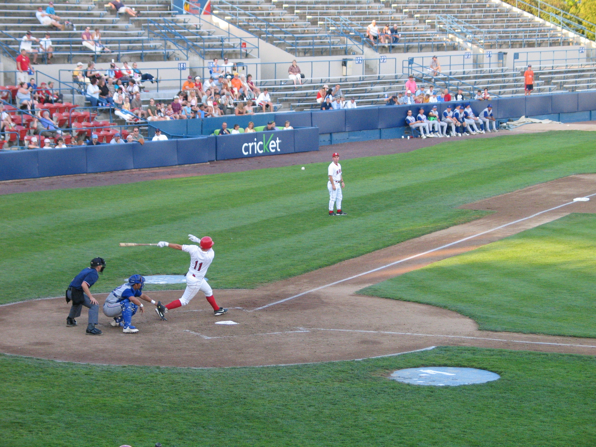
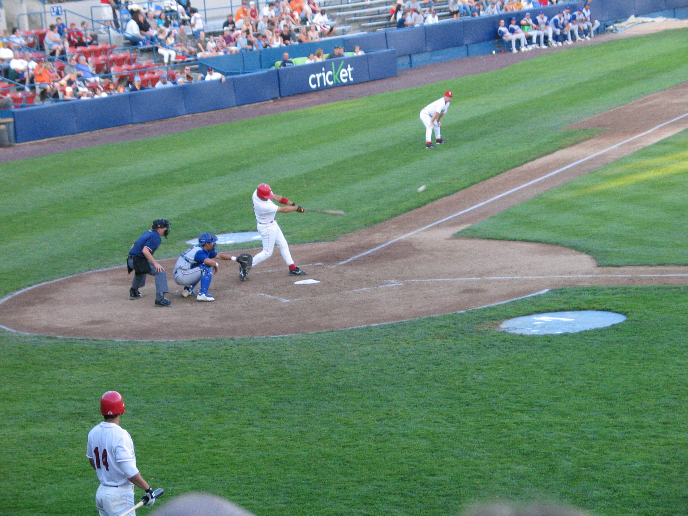
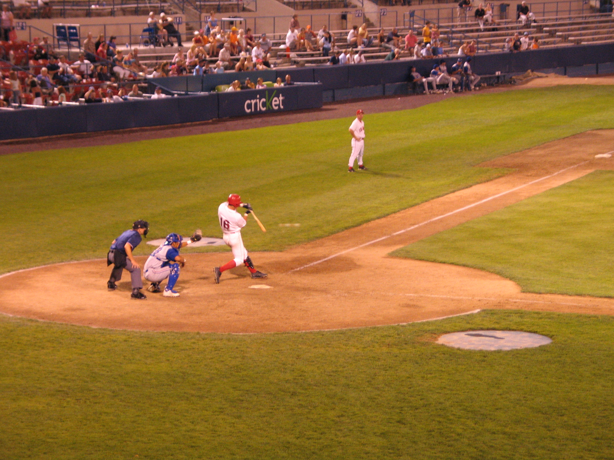

Brandon Boggs holds up on a ball. He can cover some ground in center, often playing shallower than the corner outfielders that night. Plus, he ripped a screaming line drive home run in the ninth. Fourth round pick in 2004 draft.
This coach learned that it's not wise to stand 45 feet from home when Travis Metcalf takes a rip! This bullet narrowly missed him and not because he moved in time. Metcalf also hit two homers on this night, one a line shot and the other a moon ball. Eleventh round pick in 2004 draft.
Nickaes has ripped the Northwest League pitchers, as we all know. This night wasn't his best, as he finished without a hit. Here, he hits a bloop to second. His bat appeared to be the quickest on the field that night. Fifth round pick in 2004 draft.
Bobbly Lenoir decides mid-swing that he doesn't want to swing; he made contact anyway. Twenty-first round pick in 2004 draft.